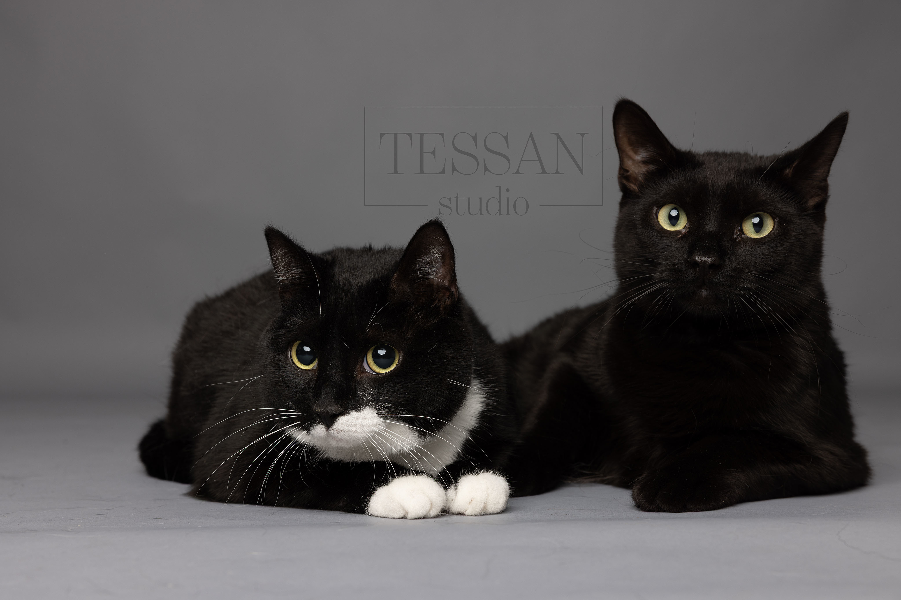
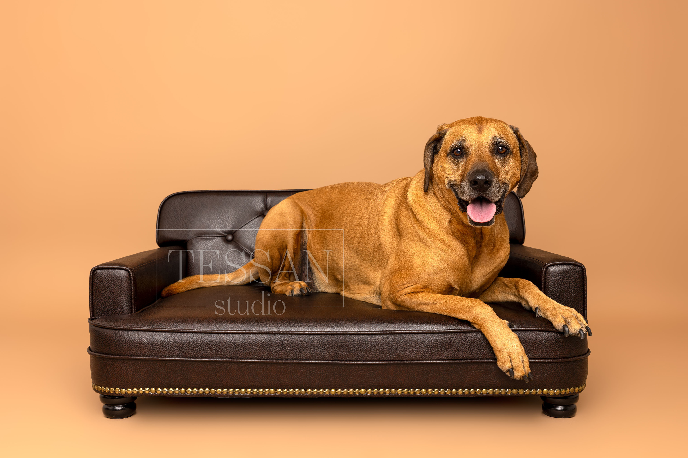
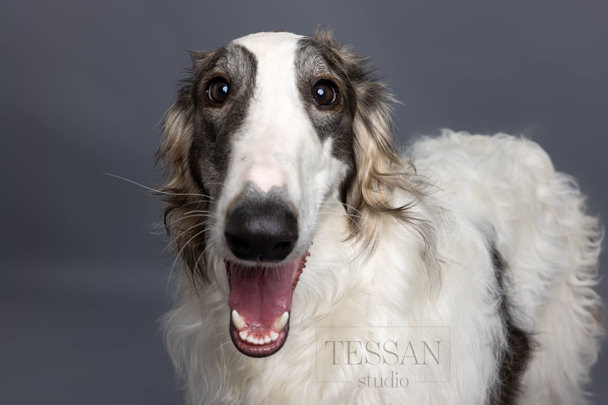
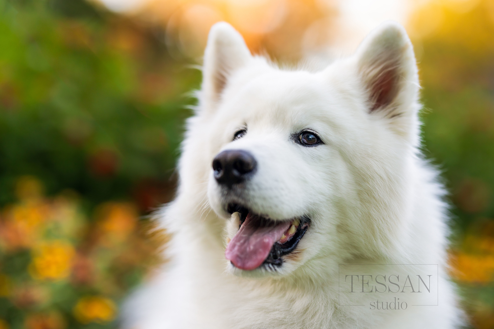
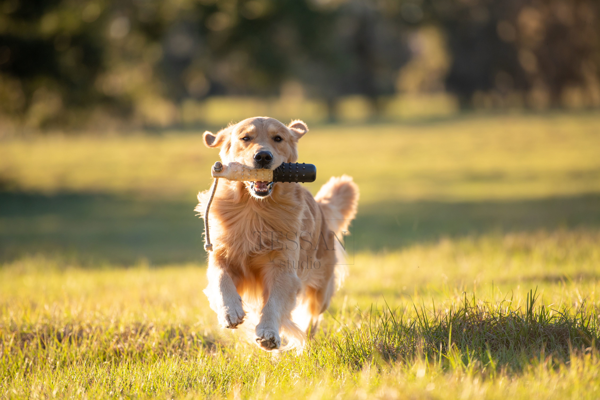
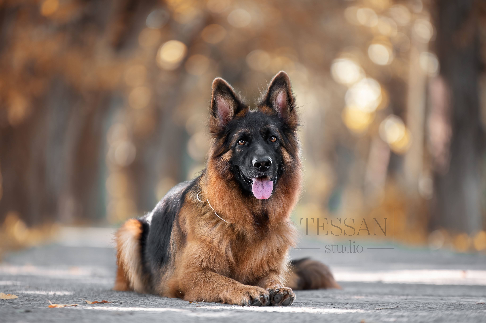

Services
Studio Photoshoot
Our studio sessions offer a calm, controlled environment where your pet can feel safe and relaxed. With professional lighting and simple, distraction-free settings, we focus entirely on your pet’s expression and personality. This option is perfect for timeless portraits that highlight every detail, from soft expressions to unique markings. Ideal for all pets, especially those who prefer a quieter space.



Location Photoshoot
Take your pet’s photoshoot outdoors and let them explore Sweden’s beautiful landscapes. Whether it’s forests, fields, or lakesides, natural light and open space create a relaxed atmosphere where your pet can move freely. These sessions capture genuine moments full of energy, curiosity, and joy. Perfect for pets who love adventure and being outside.



Event Photography
Our event photography captures the special moments you share with your pet during celebrations, gatherings, or milestone occasions. From birthdays to adoption days or pet-friendly events, we document the atmosphere, emotions, and connections as they unfold. The result is a natural story of your day, filled with candid and meaningful memories.